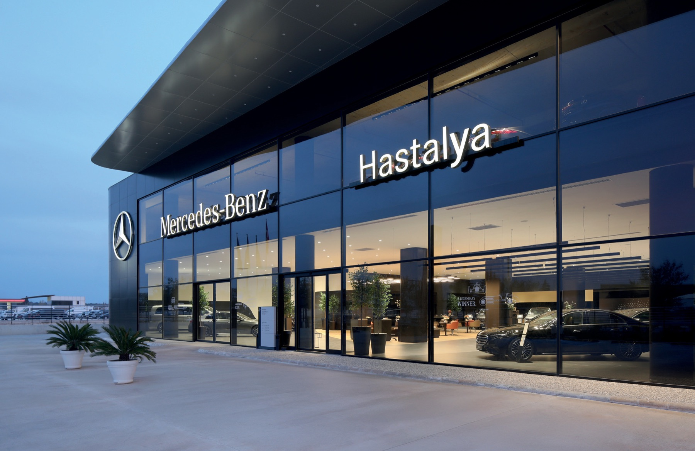
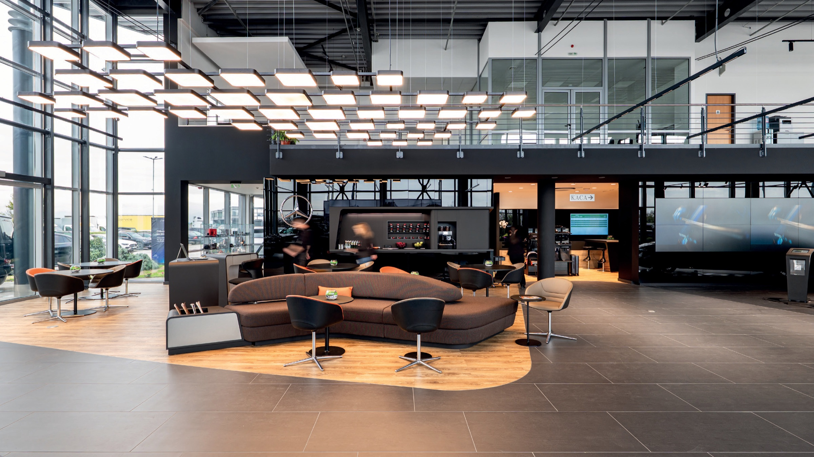
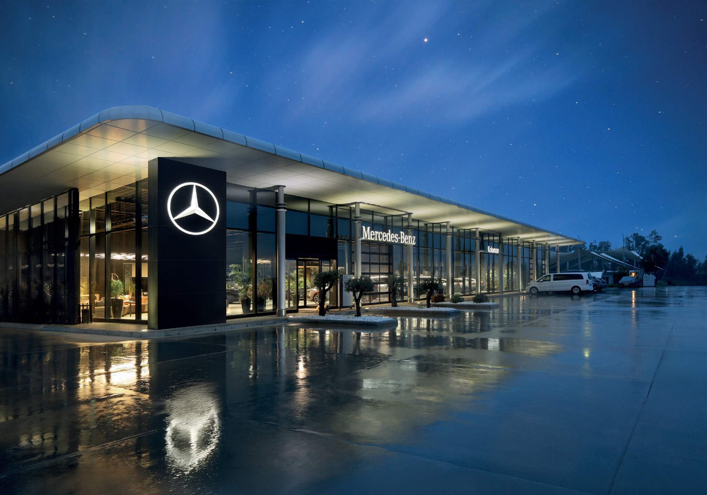
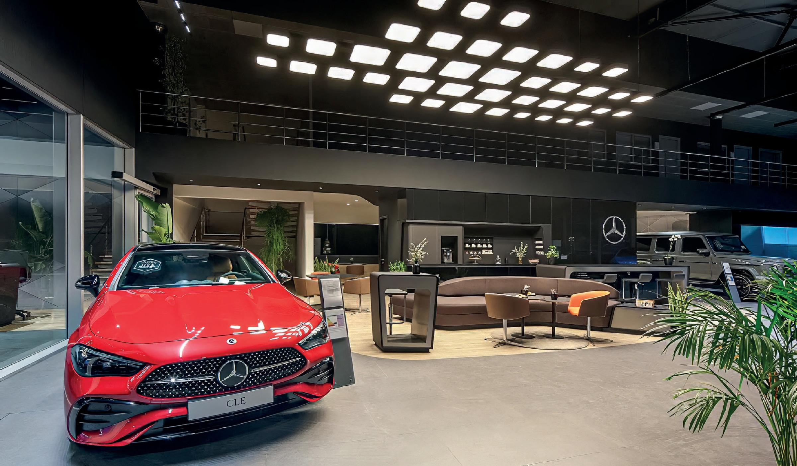
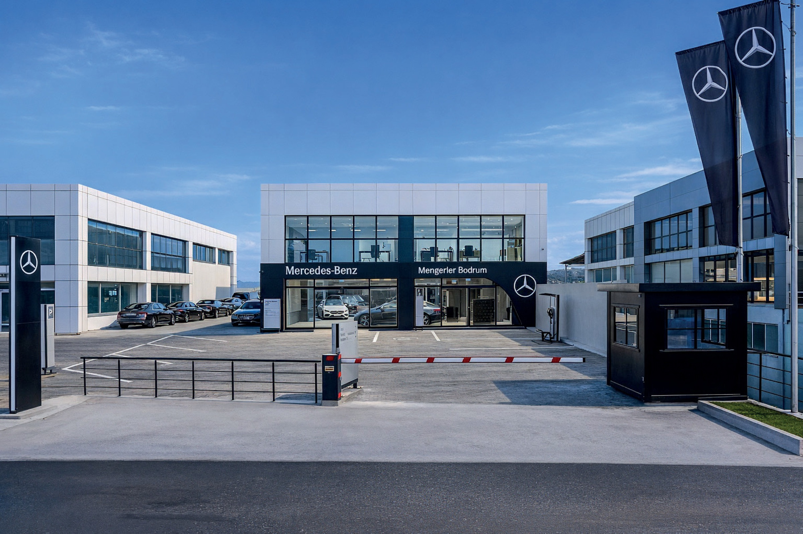
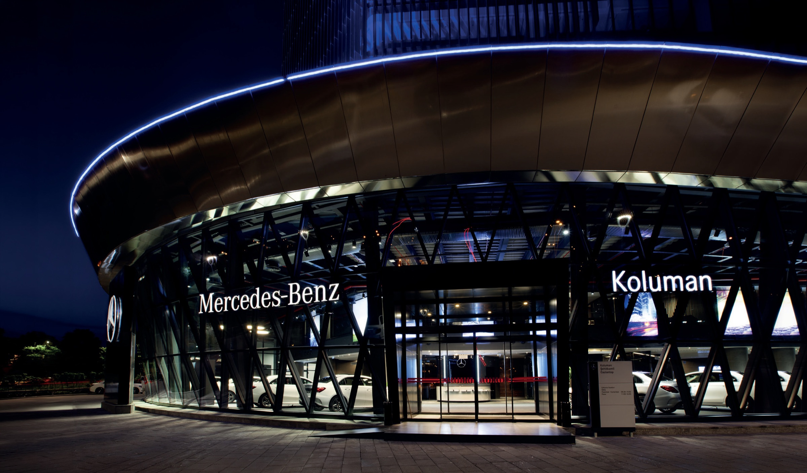

Licensed design studio
Mercedes-Benz
One of eight design studios licensed by Mercedes-Benz worldwide.
About
Dealership architecture since 2007.
We have been designing and delivering automotive projects for over 25 years, with a strong focus on Mercedes-Benz dealership architecture since 2007.
Since the delivery of Emaar Istanbul in 2016, the first MAR20X project realized after Böblingen, our MAR20X work has expanded across new-build dealerships and MPS II to MAR20X conversions.
It has taught us how to manage what arises during implementation: existing building constraints, operational continuity and coordination between stakeholders, while meeting brand standards with efficiency, timing and practicality.
- 2007Mercedes-Benz dealership architecture since
- 26MAR20X projects, completed and ongoing
- 8Further projects completed for Mercedes-Benz
- 4Countries: Türkiye, Bulgaria, North Cyprus, Ukraine
Portfolio
Selected showrooms
-
 2025
2025
Mercedes-Benz Hastalya
-

2025Mercedes-Benz Plovdiv
-

2025Mercedes-Benz Koluman Mersin
-
 2024
2024
Mercedes-Benz Emaar Mall
-

2024Mercedes-Benz Has Oto
-
 2024
2024
Mercedes-Benz Gelecek
-

2024Mercedes-Benz Mengerler Bodrum
-
 2023
2023
Mercedes-Benz Mengerler Davutpaşa
-
 2023
2023
Mercedes-Benz Merser
-
 2023
2023
Mercedes-Benz Mengerler Ankara
-

2019Mercedes-Benz Koluman Gaziantep
Project list
MAR20X projects
- Hastalya, Antalya Airport1,000 m²Showroom & after sales, MAR20X
- Koluman Göztepe, Istanbul700 m²Luxury Plus AMG & Maybach brand center, ongoing
- Koluman, Mersin800 m²Showroom, MPS II to MAR20X conversion
- Has Oto, Izmir750 m²Showroom & after sales, MPS II to MAR20X conversion
- Plovdiv, Bulgaria900 m²Showroom & after sales, MPS II to MAR20X conversion
- Varna, Bulgaria1,000 m²Showroom & after sales, MPS II to MAR20X conversion, ongoing
- Burgas, Bulgaria600 m²Showroom & after sales, MPS II to MAR20X conversion, ongoing
- Ruse, Bulgaria500 m²Showroom & after sales, MPS II to MAR20X conversion, ongoing
- Kombos, North Cyprus4,000 m²MAR20X showroom & after sales, ongoing
- Kharkiv, Ukraine800 m²Showroom & after sales, MPS II to MAR20X conversion, ongoing
- Emaar Mall, Istanbul400 m²MAR20X showroom
- Gülsoy Kurtköy, Istanbul1,350 m²Showroom & after sales, MPS II to MAR20X conversion
- Gülsoy Florya, Istanbul3,750 m²MAR20X showroom & after sales
- Gelecek, Erzurum400 m²MAR20X showroom
- Merser, Antalya1,100 m²MAR20X service
- Davutpaşa, Istanbul3,000 m²MAR20X showroom & after sales
- Mengerler, Bodrum400 m²MAR20X showroom & after sales
- Mengerler, Samsun700 m²MAR20X showroom & after sales, MPS II to MAR20X conversion
- Mengerler, Ankara1,000 m²MAR20X showroom & after sales, MPS II to MAR20X conversion
- Hasmer, Düzce1,200 m²Showroom & after sales, MPS II to MAR20X conversion, ongoing
- Mengerler, Ümitköy300 m²MAR20X service
- Mengerler, Trakya700 m²Showroom & after sales, MPS II to MAR20X conversion, ongoing
- Mengerler, Milas250 m²MAR20X service
- Koluman, Tarsus400 m²Service, MPS II to MAR20X conversion
- Hastalya, Dalaman500 m²Showroom & after sales, MPS II to MAR20X conversion, ongoing
- Hastalya, Denizli900 m²Showroom & after sales, MPS II to MAR20X conversion, ongoing
Project list
Other work for Mercedes-Benz
- Gelecek Otomotiv, Vadi Istanbul3,500 m²Showroom & service
- Mengerler Showroom, Istanbul1,500 m²Showroom
- Koluman, Gaziantep3,500 m²Showroom & service
- Vadi Istanbul Office, Istanbul14,000 m²Office
- Pop-Up Box, Istanbul25 m²Pop-up box
- Headquarters Heritage Area, Istanbul105 m²Heritage area
- Dining & Social Center, Istanbul5,000 m²Dining & social center
- Has Otomotiv / Modern Oto, Istanbul920 m²Showroom

Contact
Planning your next dealership?
Tell us the project type, approximate area and city. We will take it from there.